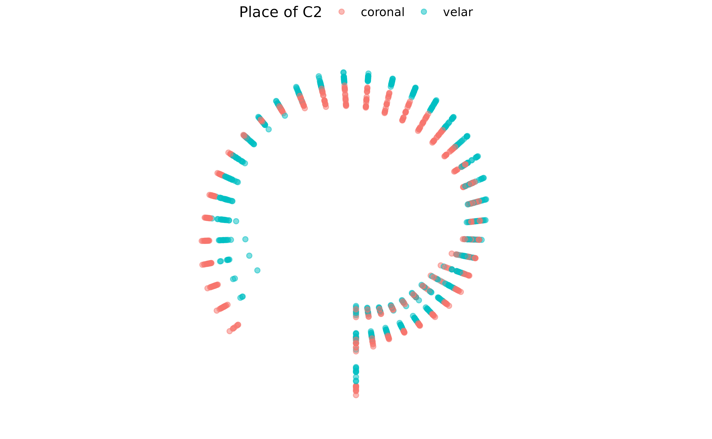

vignettes/transform-coord.Rmd
transform-coord.RmdIt is possible to transform the coordinates of your spline data from cartesian to polar and vice versa, with transform_coord(). Let’s attach the package rticulate and load the data set tongue.
library(rticulate)
data(tongue)
tongue
#> # A tibble: 3,612 × 28
#> speaker seconds rec_date prompt label TT_di…¹ TT_ve…² TT_ab…³ TD_di…⁴ TD_ve…⁵
#> <fct> <dbl> <fct> <fct> <fct> <dbl> <dbl> <dbl> <dbl> <dbl>
#> 1 it01 1.31 29/11/2… Dico … max_… 67.1 36.6 37.5 81.8 -4.95
#> 2 it01 1.20 29/11/2… Dico … max_… 77.9 -7.73 5.10 67.3 -34.3
#> 3 it01 1.08 29/11/2… Dico … max_… 65.9 21.1 20.9 81.8 -4.07
#> 4 it01 1.12 29/11/2… Dico … max_… 64.4 8.76 6.46 81.5 -2.55
#> 5 it01 1.42 29/11/2… Dico … max_… 76.9 -4.72 2.55 75.8 -58.0
#> 6 it01 1.35 29/11/2… Dico … max_… 78.1 -5.68 3.60 73.2 20.5
#> 7 it01 1.07 29/11/2… Dico … max_… 69.9 -40.0 40.0 82.4 -5.12
#> 8 it01 1.17 29/11/2… Dico … max_… 78.0 -7.31 4.37 69.3 -3.37
#> 9 it01 1.28 29/11/2… Dico … max_… 67.1 34.5 33.4 81.4 -5.28
#> 10 it01 1.10 29/11/2… Dico … max_… 75.9 -23.5 22.0 81.0 -2.89
#> # … with 3,602 more rows, 18 more variables: TD_abs_velocity <dbl>,
#> # TR_displacement <dbl>, TR_velocity <dbl>, TR_abs_velocity <dbl>,
#> # fan_line <int>, X <dbl>, Y <dbl>, word <fct>, item <dbl>, ipa <fct>,
#> # c1 <fct>, c1_phonation <fct>, vowel <fct>, anteropost <fct>, height <fct>,
#> # c2 <fct>, c2_phonation <fct>, c2_place <fct>, and abbreviated variable
#> # names ¹TT_displacement, ²TT_velocity, ³TT_abs_velocity, ⁴TD_displacement,
#> # ⁵TD_velocityNow let’s convert the cartesian coordinates to polar. transform_coord() converts to polar coordinates by default. Your data set must contain columns named X and Y with, respectively, the x and y coordinates (if the columns are named differently, you will have to rename them). The function extracts xy data from two fan lines (the defaults are 10, and 25), and it uses these data to find the origin. By default, a column named fan_line is used for the fan lines number, but it can be supplied by the user with the argument fan_line_col as a string.
If you have imported data using read_aaa(), the defaults will work, so you can just use transform_coord(your-data).
polar <- tongue %>%
filter(speaker == "it01") %>%
transform_coord()
#> The origin is x = 14.3901267816422, y = -65.2315420525847.The function returns a data set with two new columns: radius and theta. It also prints the calculated origin.
If you get an error relating to lm.fit, try to change the fan_lines to values different from the default.
We can now plot the contours using polar coordinates in a cartesian system. Notice that the tip of the tongue is on the left (rather than the right, as in the original data).
polar %>%
ggplot(aes(angle, radius, colour = c2_place)) +
geom_point() +
scale_colour_discrete(name = "Place of C2") +
theme(legend.position = "top")
#> Warning: Removed 264 rows containing missing values (geom_point).Plotting in polar coordinates gives a sense of the actual shape of the tongue, but it is a bit trickier and it does not look very nice… (the tip is again on the left).
polar %>%
ggplot(aes(angle, radius, colour = c2_place)) +
geom_point(alpha = 0.5) +
scale_colour_discrete(name = "Place of C2") +
coord_polar(start = pi) +
xlim(min(polar$angle) - pi / 2, max(polar$angle) + pi / 2) +
ylim(0, max(polar$radius)) +
theme_void() +
theme(legend.position = "top")
#> Warning: Removed 264 rows containing missing values (geom_point).